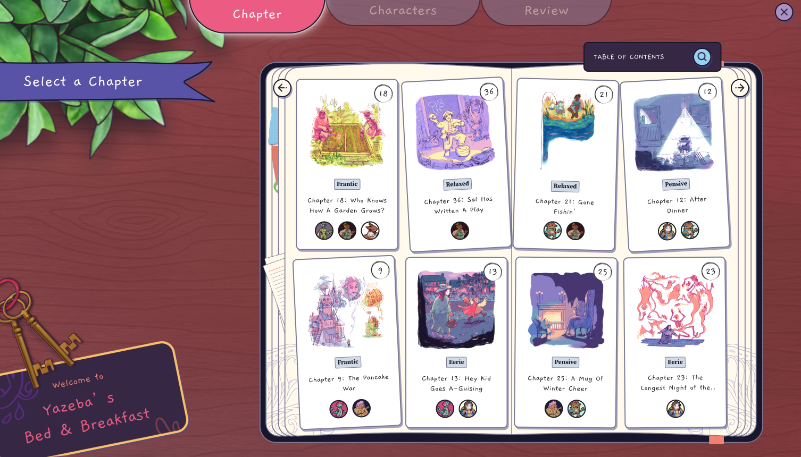
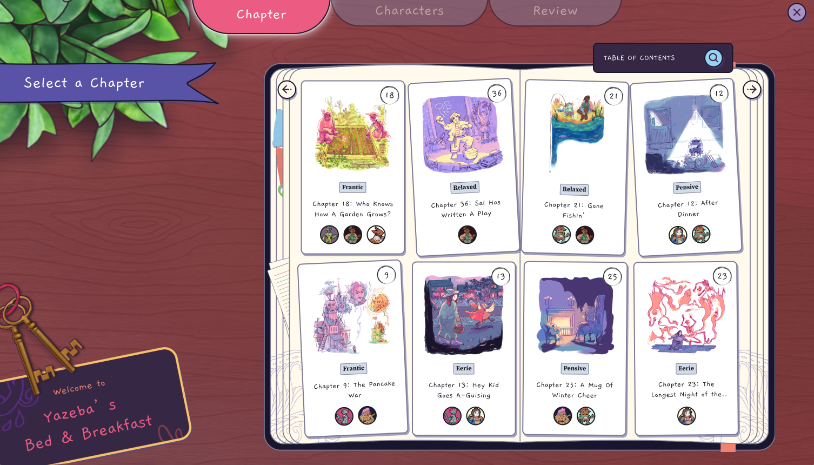
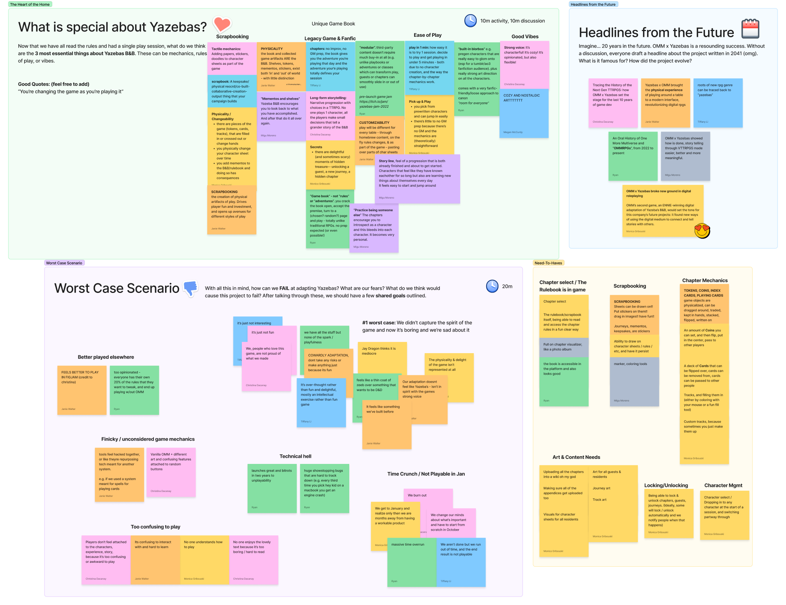
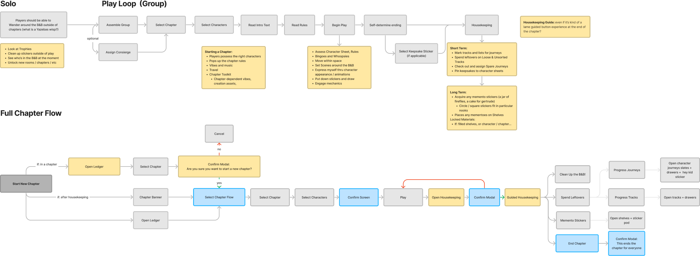
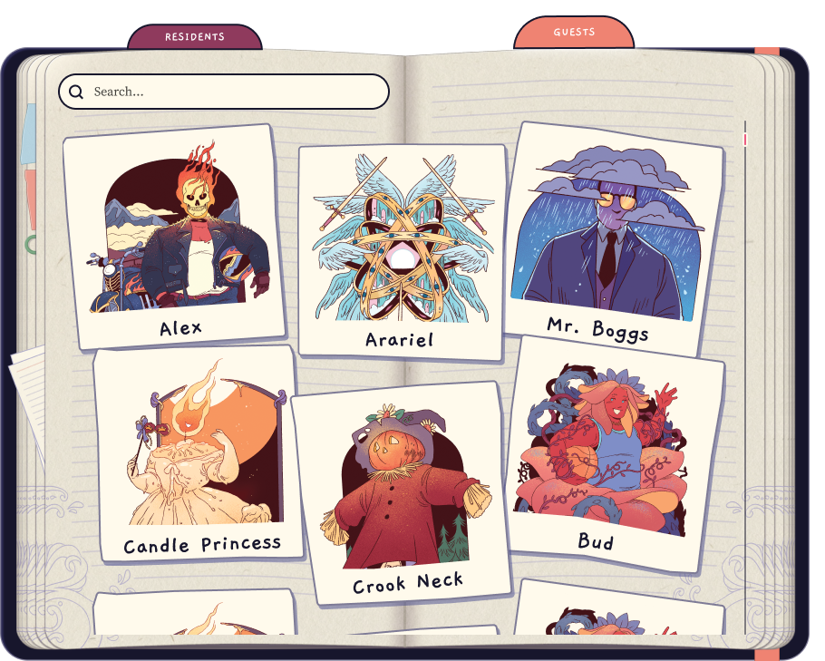
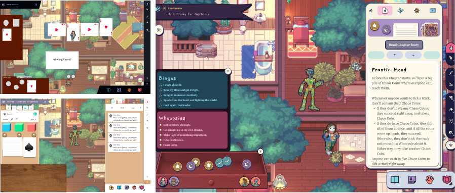

Crafting Surprises in
Emergent Gameplay
I was tasked with leading the design for a tailored player experience for the unique tabletop
roleplaying game (TTRPG), Yazeba's Bed and Breakfast, on our platform from concept to launch
within two months.
The opinionated design process, continuous user testing, and tight development loop allowed us
to accomplish the business goal of cost-effective development while also creating a delightful
online play experience that we felt was true to the heart of the intended tabletop experience.
The Yazeba's bundle sold 3,000 units and was featured on the itch.io front page.
Design Lead
Product Design
Design Management
Experience Design
 

Finding Our Principles
After the core team had familiarized ourselves with the book and played a few chapters of the TTRPG, I led a three-hour design sprint with the core team. Our primary goal was to align our business objectives with our vision for the game, ensuring that every decision made during development was consistent with our guiding principles.
During the sprint we engaged in several collaborative activities including brainstorming sessions, competitive analysis, and empathy mapping. We discussed the unique qualities of Yazeba's Bed and Breakfast, such as its emotional depth and the importance of emergent, player-led gameplay. We focused on how we could translate these qualities into a digital format while keeping the experience dynamic and full of surprises. We also identified the core values that would drive our design, such as user accessibility, immersive storytelling, and preserving the collaborative spirit of the tabletop experience.
By the end of the sprint, we had established a clear set of design principles that would guide us through development. These principles included maintaining a user-centric approach, focusing on simplicity and clarity in our tech and UI/UX design, and ensuring that the digital experience remained true to the original game's intent and mechanics. These principles allowed us to make informed and consistent decisions quickly and independently throughout the project.
The Process
During our sprint we determined what we’d need to build from scratch versus what we could simply reskin from the existing platform. While the engineers set off to leverage existing assets I began sketching how we might represent some of the TTRPG’s more novel mechanics. A key aspect was designing for emergent gameplay, ensuring that players would encounter delightful surprises that could inspire creative interactions.
I mapped out the entire game experience, creating user journey maps that outlined each game phase. This included the sequence of activities players would engage in, from setting up the game to progressing through various chapters and game phases. Each flow was carefully crafted to ensure a smooth transition between play modes, maintaining player engagement and minimizing any potential frustration. Every new game feature was designed with the potential for player-generated surprises in mind.
Testing and Feedback
To ensure the user experience was as seamless and engaging as possible, we conducted multiple rounds of internal testing throughout the development process. As every feature rolled out and as we designed different flows we'd invite members outside of the team to play and offer their feedback.
During these sessions, we closely observed how players interacted with the game, noting any points of friction or confusion. At different times we'd focus on aspects such as the intuitiveness of the UI, the clarity of game instructions, and the overall enjoyment of the experience. We paid special attention to how players responded to the non-dice related gameplay elements, ensuring that these features were intuitive and added depth to the experience.
Based on this feedback, we iterated on our designs, refining the user interface and information architecture. One significant change was simplifying the chapter selection screen to highlight the custom illustration while also showing the chapter's tone and what characters were required to play. We also enhanced the tutorial sequence, making it more interactive and aligned with the playbook's narrative style, while also emphasizing the open ended possibilities of digital play.
Building the B&B
With a motivated, high-trust team and many productive constraints, we surpassed our own expectations. Players can collect stickers, swap coins, and move through the seasons as they play through the chapters of the game. We were also able to squeeze in some of our pet features before the end of our time limit, including a polaroid feature, doodle pages, and a custom tutorial sequence that draws on the introduction to the playbook. The incorporation of playful and creative game tools ensured that each playthrough could be unique and full of delightful surprises, staying true to the spirit of the original tabletop experience.
You can watch a playsession of Yazebas Bed & Breakfast on One More Multiverse below.
Team:
Monica Gribouski, Executive Producer
Meg Curdy, Art Director
Jaine Jaffe, Principal Developer
Ryan Goldstien, Principal Developers
Jen Maggio, UI Design
Giovanni Luigi Piazza, UI Developer